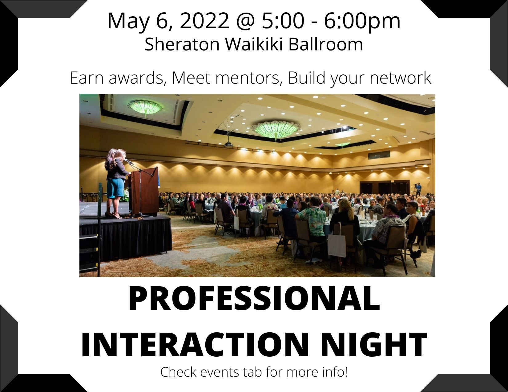
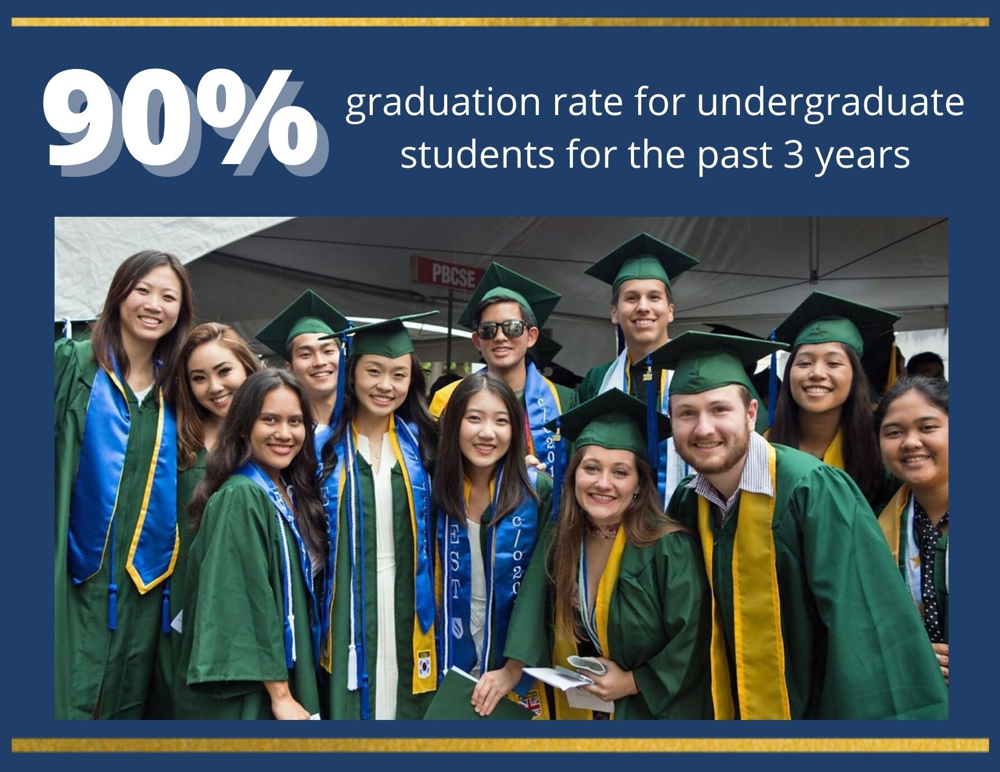
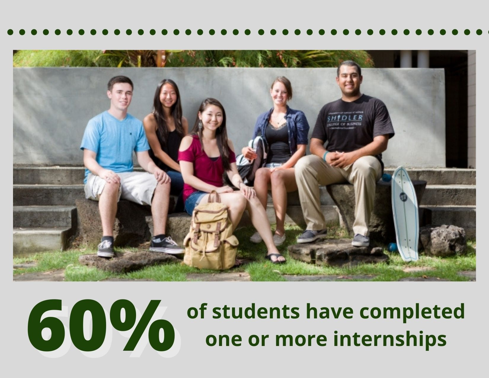
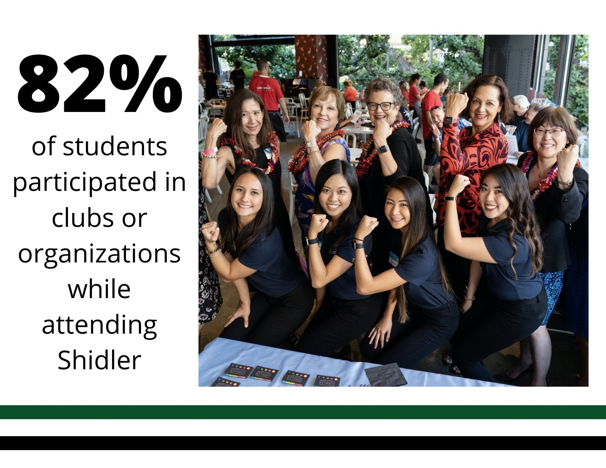

CONNECT WITH THE BEST ON OAHU!

Shilder Career Services is passionate about providing meanignful connections for students and employers. We offer services and resources to help our undergradute students, alumni, and employers reach their goals.
Shidler graduates enter the workforce equipped with experience, knowledge, and optimism. They make an impact wherever they go.
Learn more about what Shidler can do for you


Shilder Career Services invites industry professionals to talk, network and engage with students as they go above and beyond to reach their career goals.
Company ResourcesDID YOU KNOW?